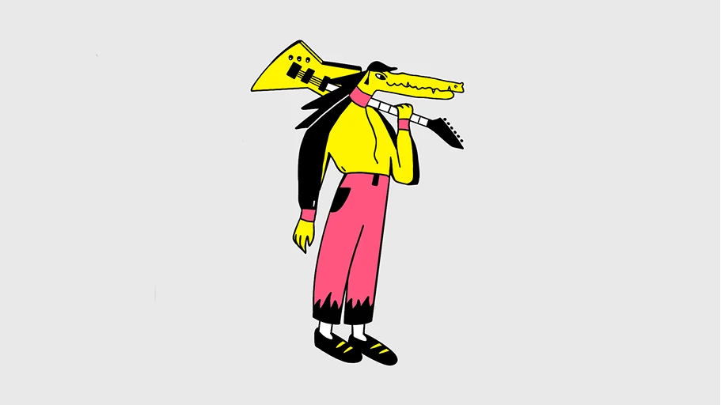
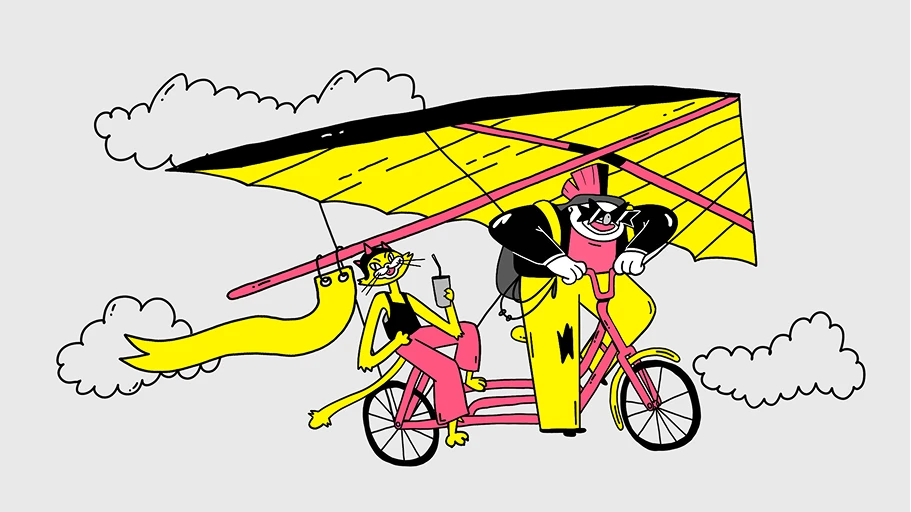
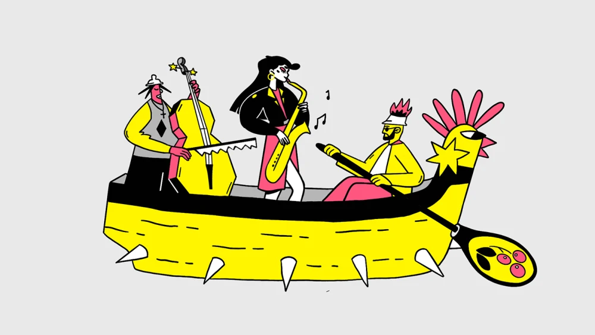
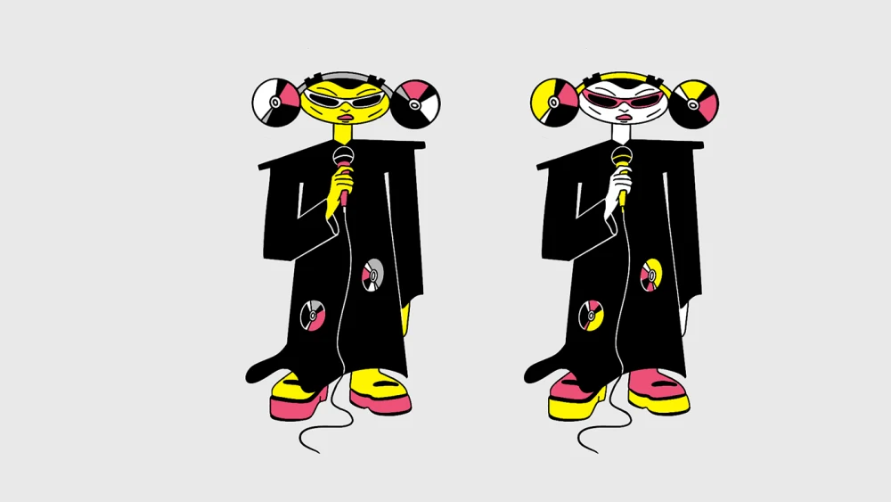
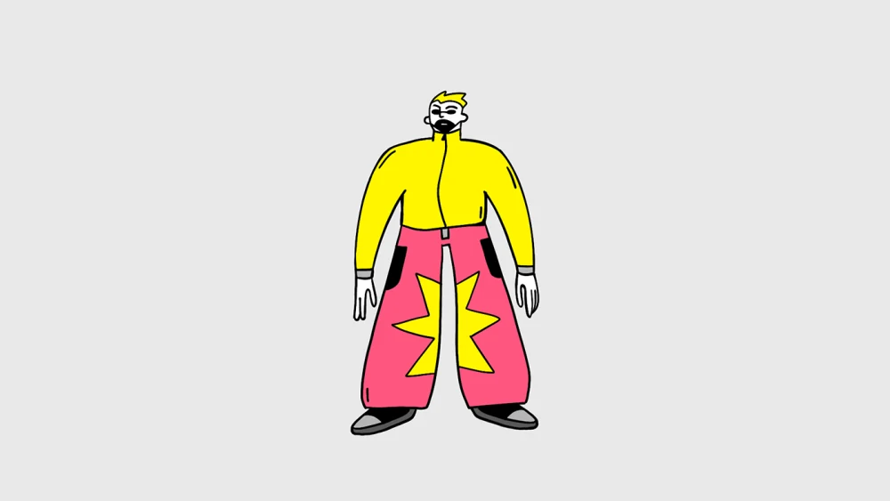
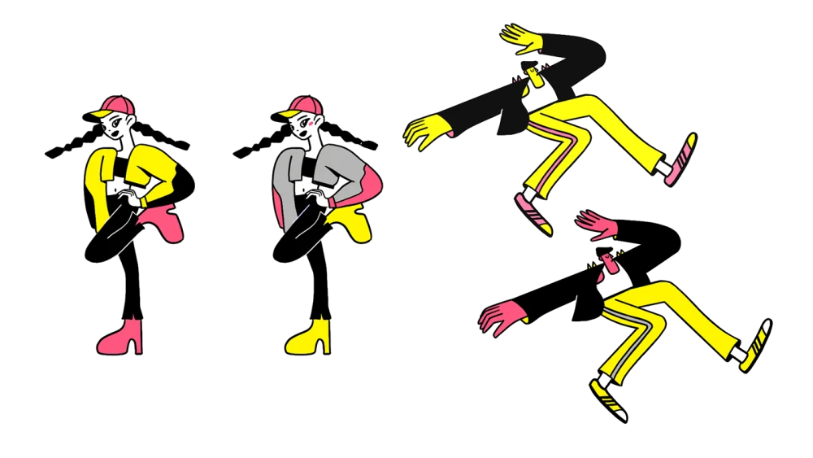
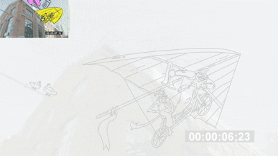
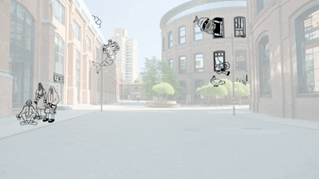
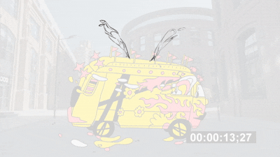

Проморолик · Съемка и 2D-анимация
Яндекс Афиша
О проекте
Яндекс Афиша заказала проморолик о летних фестивалях и концертах. Задача команды — передать атмосферу событий, на которых хочется оказаться.
Рисованные персонажи появляются в кадрах реального города. Их характеры и детали вдохновлены ретро-эстетикой и поп-культурой детства.
Мой вклад
Вместе с арт-директором проекта я разработала систему персонажей для рекламной кампании, ориентированной на молодежь и миллениалов.
Я отвечала за характеры персонажей и общие графические принципы, а также сопровождала их реализацию. У каждого героя был свой характер, а общие визуальные правила объединяли их в одну кампанию.
Главные персонажи






Анимация в работе


